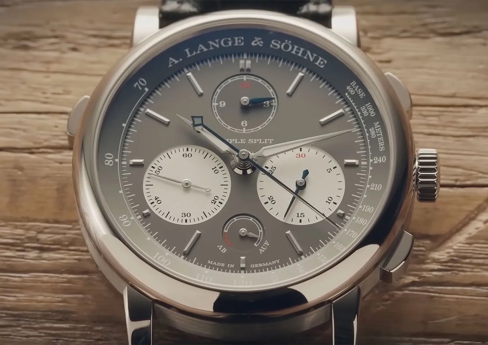
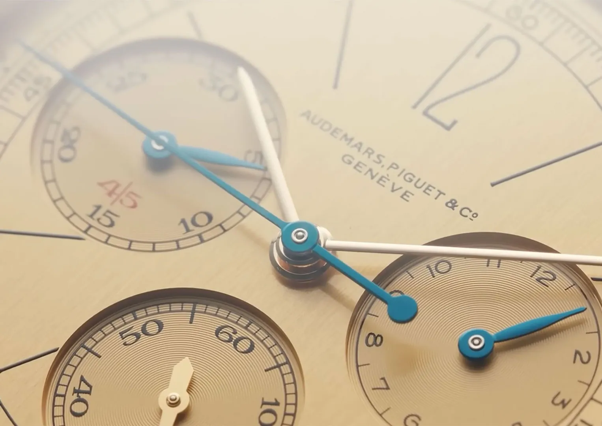
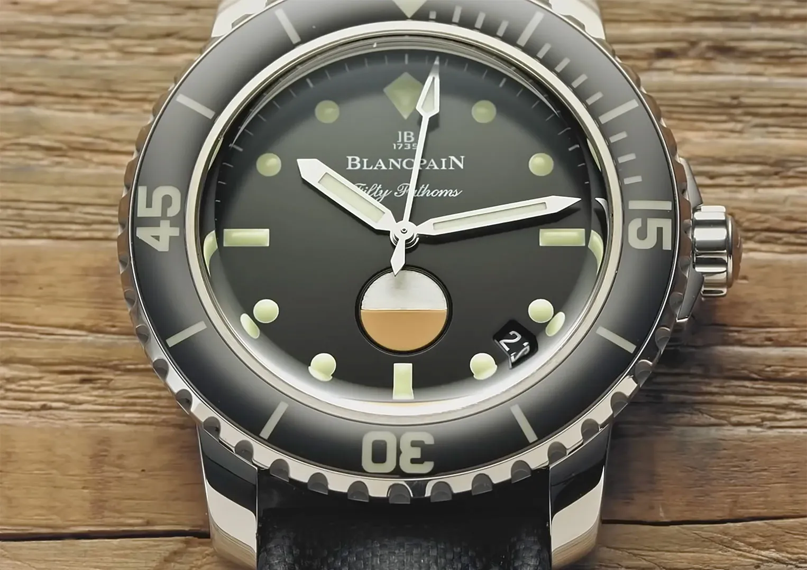
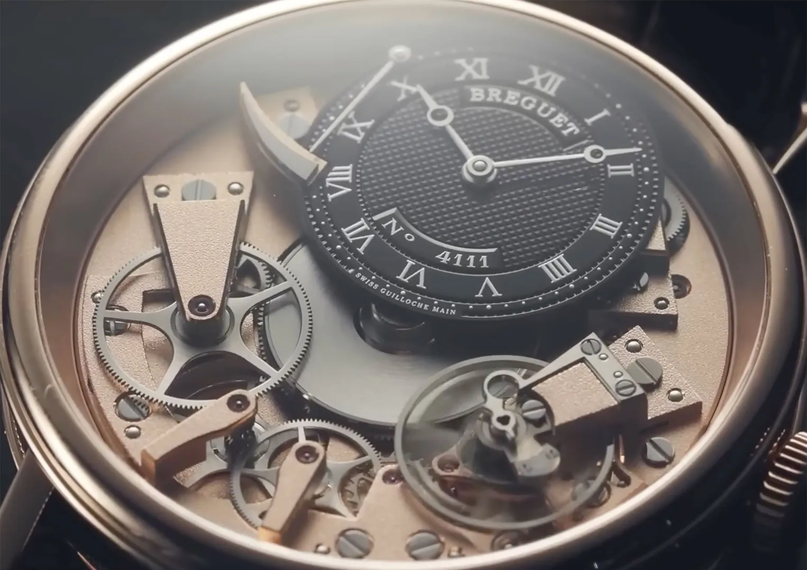
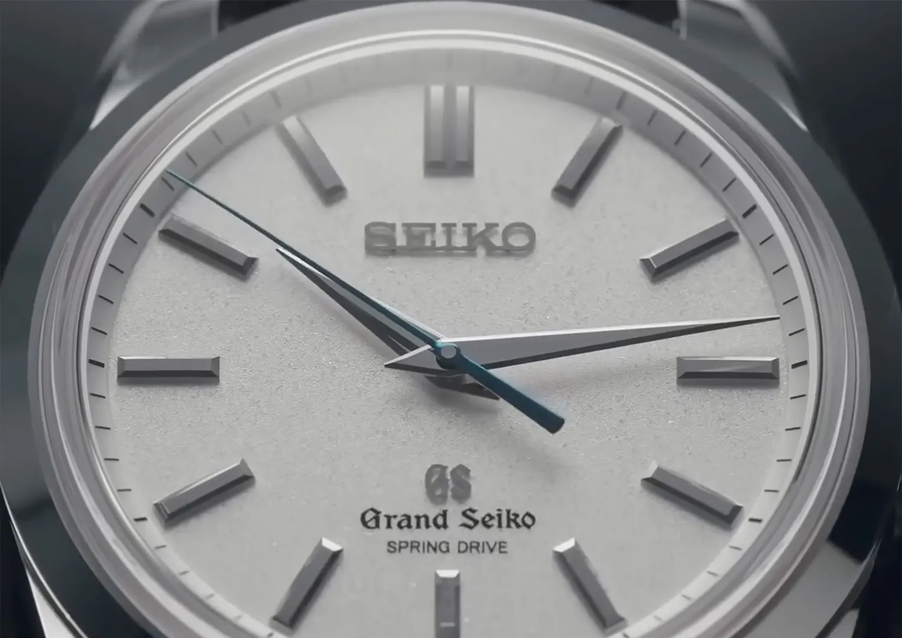
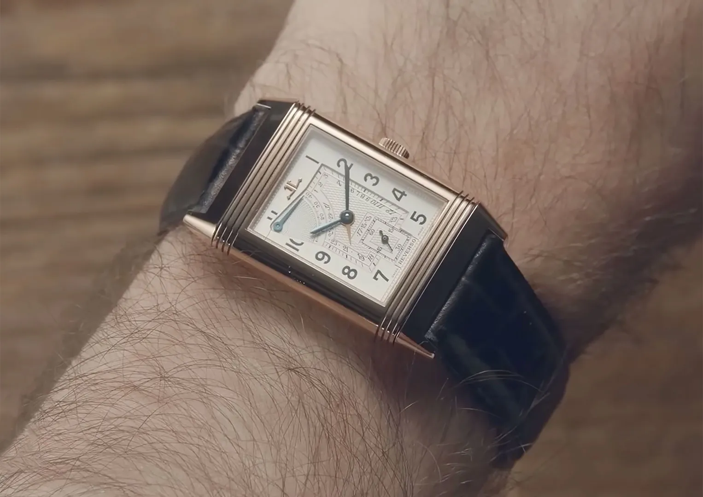
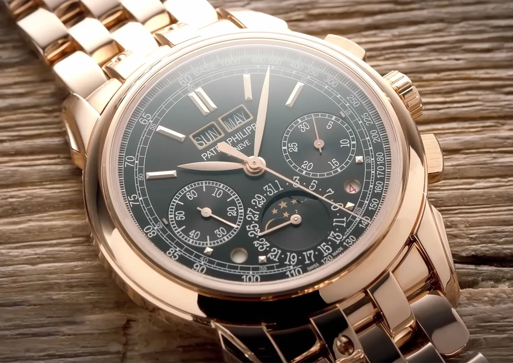
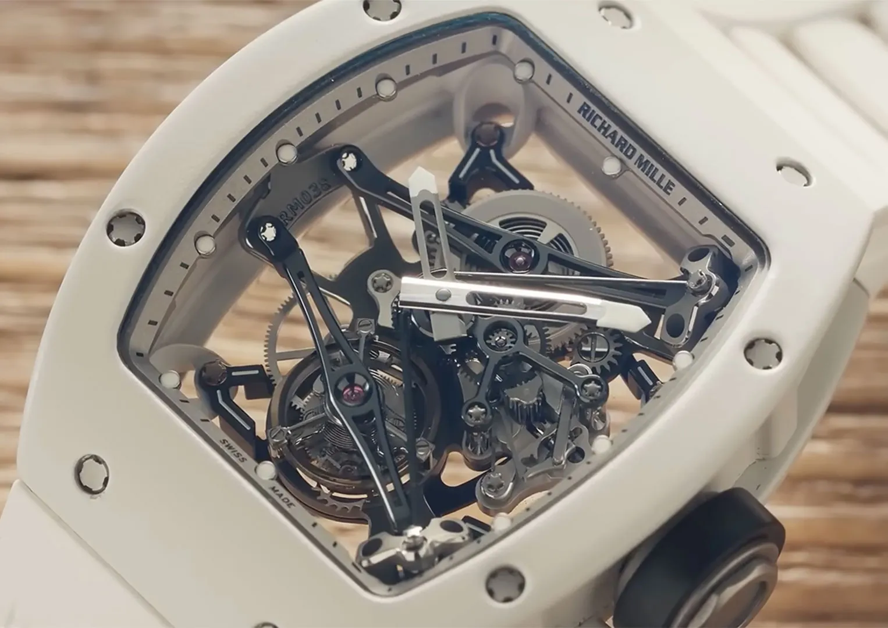
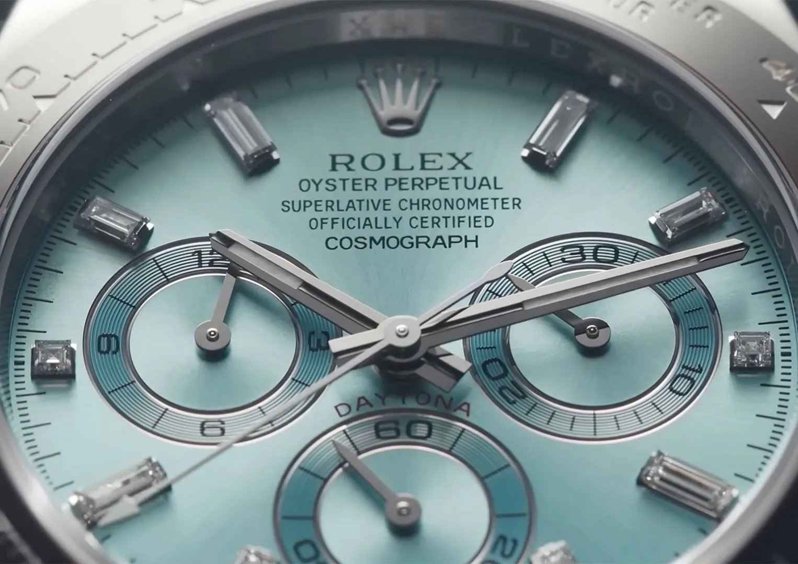
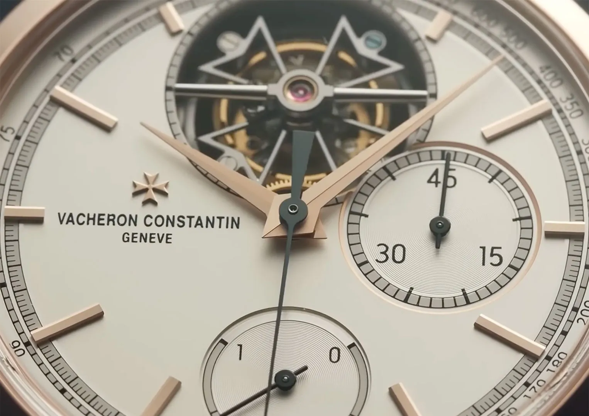

Feature: Top 10 Most Expensive Luxury Watch Brands
If you want the very best of watchmaking, chances are you’re also going to want the most expensive. These are the top ten most expensive luxury watch brands in the world!
A.Lange & Söhne
You might not expect the first brand in this list to come from Germany instead of Switzerland, but A.Lange & Söhne has been making watches in the little watchmaking town of Glashütte since 1845. The area, now famed for its high-quality watch brands, was established by A. Lange & Söhne founder Ferdinand Adolph Lange with help from a government grant to revitalise the dwindling mining town.

This watchmaker is famed for its precision and attention to detail, establishing the famous German three-quarter plate look. Not only is that a staple German watchmaking trend, it also demonstrated that A. Lange & Söhne had the capability to place precise holes in one large piece of metal, rather than relying on the adjustability of several smaller pieces to make everything fit. The German watchmaker is also known for its incredible—and incredibly inventive—complications, with the $200,000 Triple Split chronograph allowing not just a secondary hand to pause for the seconds, but the minutes and even hours too.
Audemars Piguet
Primarily known for the Royal Oak, Audemars Piguet is most famous for drawing a line in the sand in 1972 to turn the entire industry from a supplier of instruments to a creator of luxury. Quartz watches—which were much cheaper and much more accurate—threatened to destroy Switzerland’s entire mechanical watchmaking landscape.

It was with some quick thinking—mostly from designer Gerald Genta, who submitted the sketches for the Royal Oak the night before the big unveiling—that Audemars Piguet reinvented the idea of a mechanical watch being a highly desirable luxury item, pricing the simple steel Royal Oak higher than its gold complications. Other masters Patek Philippe and Vacheron Constantin soon took Audemars Piguet’s lead and created their own versions too. But Audemars Piguet wasn’t established on the Royal Oak. Founded way back in 1875, the watchmaker earned its crust in high complication movements for other watchmakers. The quality was so good, it wasn’t long before they started making watches of their own. Nevertheless, it was still a Royal Oak that achieved a $2m price at auction.
Blancpain
When you think of the classic dive watch, the first thought is of the Rolex Submariner, but it was in fact Blancpain that established the now-famous layout. With a black dial with bold, contrasting markers coated in luminous paint, plus a rotating timing bezel, it was Blancpain’s Fifty Fathoms that sparked a new era.

That was in 1953, but Blancpain had already been operating continuously since 1735. It is the oldest watchmaker still in business today, and the excellence of its watchmaking, both in classic complication and sturdy dive watches, has kept it in business. A gem-set tourbillon can cost you upwards of $1m.
Breguet
Many consider Abraham-Louis Breguet to be the father of modern watchmaking, bridging the gap between the classic English pocket watch makers and the more recent Swiss wristwatch makers. He learnt from the best, worked with the best and became the best, when in 1775, he founded his namesake brand.

Some of the things that can be attributed to Breguet include the first automatic movement that wound
itself, the tourbillon complication which adds several layers of complexity to cancel out the
effects of
gravity, the balance spring overcoil to produce a more concentric swing, and more recently, the
silicon
escapement.
Compared to Audemars Piguet and Patek Philippe, Breguet flies under the radar, but is considered by
those in the know to be superior. The price is indicative of that, with Breguet’s most expensive
watch,
a recreation of a complicated pocket watch originally created for Marie Antoinette, fetching $10m.
Grand Seiko
As another watchmaker that hails from outside of Switzerland, you wouldn’t expect a brand with the name “Seiko” in it to be in a most expensive list. Nevertheless, the “Grand” offshoot of the Japanese brand is one that fetches some very pretty pennies indeed.

Grand Seiko was originally established in 1960 as an experiment by parent brand Seiko—itself founded in 1881—to see if it could beat the Swiss at its own game. Literally—the Swiss hosted annual competitions to see who could make the most accurate watch.
In order to challenge the Swiss, Seiko set up a little internal competition of its own. It built two factories, one King Seiko, the other Grand Seiko, to compete with each other to build the best watch. Year after year the performance improved until eventually, a Grand Seiko mechanical watch beat the Swiss. The Swiss closed the competition after that. The result? The most expensive Grand Seiko you can buy today is a very grand $200,000.
Jaeger-LeCoultre
If you’ve ever wondered why watchmakers such as Patek Philippe, Audemars Piguet and Vacheron Constantin perform so well, the answer somewhere along the line usually goes something like, “Jaeger-LeCoultre helped them.”

Jaeger-LeCoultre wrote the book on high-precision watchmaking, developed the processes to even measure at high accuracy. Literally: founder Antoine LeCoultre invented the device that allowed measurement of a thousandth of a millimetre for the first time.
A background in metal science allowed Antoine to completely reinvent how watches could be made, paving the way in 1833 for the likes of Patek Philippe etcetera to follow. In fact, Jaeger-LeCoultre often worked with or just outright made the movements for the very best watchmakers in the world, earning it the title, “The watchmakers’ watchmaker.” The most expensive Jaeger-LeCoultre, the incredible Reverso Quadtriptyque, sells for a cool $1.35m.
Patek Philippe
Perhaps the best-known classical watchmaker in the world today, Patek Philippehas earned its reputation by continually advancing watchmaking. Since its founding in 1839, Patek Philippe hasn’t just given us game-changing inventions like the winding and setting crown and split-seconds chronograph wristwatch, it even invented the first electric clock!

Famous historic customers include Queen Victoria, Albert Einstein, Marie Curie, John F. Kennedy, Nelson Mandela, Pablo Picasso and the Pope, all drawn to the reserved intricacy of a Patek Philippe watch. In fact, the way the wristwatch looks today is really thanks to the 1930s Patek Philippe Calatrava, created to save the business when customers were no longer purchasing pocket watches.
Patek Philippe’s reputation is predominantly earnt through its ability to produce high complication watches, with many notable achievements throughout history for the most complex ever produced. Today, its most complicated wristwatch, the Grandmaster Chime, boasts twenty complications and a price tag of $2.6m—although one was recently auctioned for $31m.
Richard Mille
From traditional watchmaking to contemporary, but no less expensive, comes Richard Mille. One of the younger big brands in watchmaking, founded in just 1999, it was created to throw off the stale convention of the industry and try something new. Cases are big and bold, the movements incredibly complex—even when they’re functionally simple—and the prices sky-high.

And these aren’t just show pieces: they’ve been designed to be put through their paces by sporting greats such as Fernando Alonso, Rafael Nadal and Bubba Watson, athletes enduring extreme forces that would break any ordinary watch.
But really, it’s the styling that draws attention to Richard Mille, looking unmistakably unique—even from a distance. As such, a Richard Mille watch will regularly fetch over $1m, with some stretching to even $3.4m.
Rolex
As the most famous watch brand in the entire world, it comes as no surprise to learn that Rolex is also one of the most expensive. Funnily enough, many of its watches are actually some of the cheapest in this list, and by a long, long way—if you can get them. Sky high demand means that there’s no end of customers seeking to get on the waiting list, and that’s made used Rolex watches very expensive indeed.

For example, the most expensive Rolex sold at retail today is the Daytona Rainbow, a gem-set piece that fetches around $100,000 new. That lucky customer can immediately sell it on for at least $500,000, and could potentially hold out for a $1m if they were feeling lucky.
But the most expensive Rolex ever sold cost significantly more. Another Daytona, this time famed Hollywood actor and racing driver Paul Newman’s own, sold at auction for a whopping $18m.
Vacheron Constantin
Last, but very much not least, is the third in the trio of the top three watchmakers alongside Patek Philippe and Audemars Piguet, Vacheron Constantin. Whilst it often sits in the shadow of its famous siblings, it is indeed the one that could well be considered the best. Not only was it founded earlier in 1755, it also, to this day, boasts the record for the most complicated watch ever made.

Built for the brand’s 260th anniversary, the 57260 pocket watch, a huge thing the size of a saucer and as thick as a brick, packs an incredible 57 different complications—that’s almost three times the Patek Philippe Grandmaster Chime’s roster.
But Vacheron Constantin isn’t a one-trick pony. The brand routinely produced the world’s thinnest watches, as well as some of the most complex and artistically impressive. If you want to buy the 57260, well, you can’t. There’s only one, it’s worth around $10m, and it’s already spoken for.